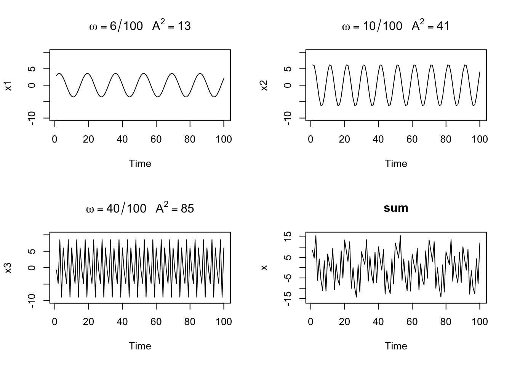
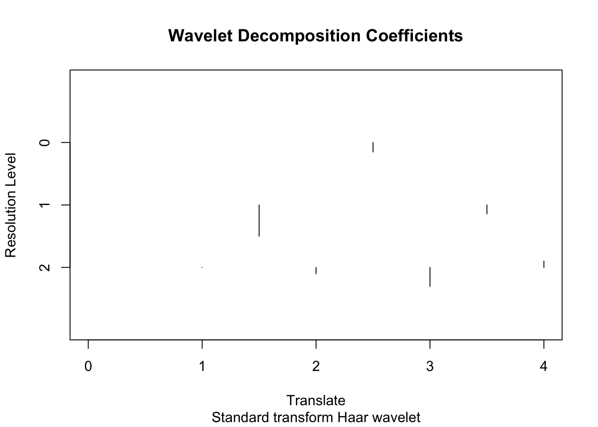

Chapter 15 공간점과정
이 절에서는 공간점과정(spatial point process)에 대한 소개를 한다. 공간점과정은 1차원(주로 시계열 상의 자료) 및 3차원(지구상의 태풍, 화산 자료)에서도 고려 가능하나 주로 다루는 차원은 2차원이다.
15.1 공간점패턴 자료의 예(examples of spatial point patterns)
공간점패턴(spatial point patterns) 자료란 어떤 관찰값 또는 사건의 관찰지역 내의 장소들을 모아놓은 자료라고 볼 수 있다. 주된 예로는 나무의 위치, 동물의 거주지역, 범죄 장소, 은하의 위치 등을 들 수 있다.
다음은 공간점패턴 자료의 예들이다. 이 자료들은 R 패키지 spatstat에 있다.
- Japanese pine trees data
일본소나무자료는 Numata (1961)가 모은 자료로 spatstat에서 japanesepine이라는 이름으로 들어있다. 공간점자료를 받았을 때 처음 할 일은 이 자료가 어떤 패턴을 가지고 있는지 확인해 보는 것이다. 그림을 그려 본 결과 이 자료는 특별한 패턴이 보이지 않으며 완비 무작위성을 띤다고 볼 수 있다.

- Califonia Redwoods
레드우드는 세계에서 제일 키가 큰 나무 종류 중 하나라고 한다. 이 자료는 Ripley (1977)이 62그루의 캘리포니아 레드우드 모종(seeding)과 묘목(sapling)의 위치를 모아놓은 자료이다. redwood라는 이름으로 들어있다. 묘목 사이에 군집(cluster)이 형성되어 있음을 확인할 수 있다.

- Biological cells
Crick and Ripley (1977)은 광학현미경으로 관찰한 42개의 생물학적 세포의 중심들을 자료로 만들었다. cell라는 이름에 들어있다. 이 자료의 특징은 세포의 크기 때문에 모든 점들이 일정 거리 이상 떨어져 분포하고 있다는 것이다.

- Amacrine cells
Diggle (1986)은 토끼의 망막에 있는 94개의 무축삭 세포(Amacrine cell) 자료를 분석했다. 이 세포들 중 152개는 빛이 들어오면 뇌에 정보를 전송하고 나머지들은 정보를 전송하지 않는다고 한다. amacrine이라는 이름으로 들어있다.

여기서는 각자의 특징이 있는지, 두 그룹 사이에 관련성이 있는지에 대해 분석하게 된다.
마지막으로 marked point pocess라는 것도 있는데 이것은 점에 추가로 정보가 붙어있는 자료들을 의미한다. 무축삭 세포 자료가 이에 해당될 것이다.